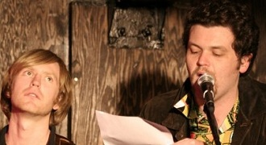
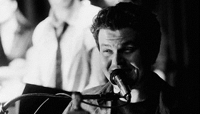

MATT MCKENNA
Actor - Emeritus Member
Matt McKenna was born in Los Angeles but grew up in La Jolla, California. Knife fights over food and women were frequent, if “frequent” were to become street slang for “never.” It was in high school that Matt became one of The Comedy Store’s youngest stand-up comedians, first getting up at the age of 16. He attended Northwestern University, where he was both a theatre major and an English-Writing major. At Northwestern Matt was cast in, then later co-directed (with LMR company member Ryan Harrison) the MEE-OW comedy show.
After school, Matt spent five years as a writer and voice-actor for the FOX animated sitcom American Dad. His roles on the series include Cap’n Monty (the James Lipton-esque pirate talk show host), Buckle (the former Disney imagineer turned mountain survivalist), and Lindbergh Baby (a fat man living in a storage unit who believes himself to be said purloined tot of yesteryear). Some of his favorite episodes (co-written with his brother Chris) are “Tears of a Clooney,” “The One That Got Away,” and the 2009 Christmas episode entitled "Rapture's Delight" in which Matt played the role of Jesus Christ. Matt re-awakened his sleeping live comedy performance giant (so to speak) to join Lost Moon Radio as a contributing writer and actor, portraying show host Jupiter Jack. Matt is the creator and star of Enter Spider, which brings high-concept stand-up and sci-fi tinged sketch comedy to Los Angeles on a regular basis.
Matt in Action...

In our first ever show at St. Nick's Pub.

At Club Fais Do Do.